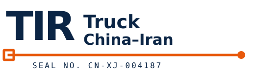

伊朗一侧的入口是萨拉赫斯或洛特法巴德。这两个名字只回答一个问题：货从哪个口岸进伊朗。它们不是我方交货的地方，也不作为可售目的地。
能报的目的地只有两个海关场站：马什哈德海关，和德黑兰西关（沙赫里亚尔 / 阿普林）。德黑兰的供应商问「车停在哪」，答案永远是这两个之一，不是边境。

WhatsAppTIR TRUCK · CHINA → IRAN
询价里最常混的两个名字：货从哪个口岸进伊朗，和在哪个海关场站交货。只有后一个是交付地。
国内集货仓到乌恰另计约 7 天。
伊朗一侧的入口是萨拉赫斯或洛特法巴德。这两个名字只回答一个问题：货从哪个口岸进伊朗。它们不是我方交货的地方，也不作为可售目的地。
能报的目的地只有两个海关场站：马什哈德海关，和德黑兰西关（沙赫里亚尔 / 阿普林）。德黑兰的供应商问「车停在哪」，答案永远是这两个之一，不是边境。
条款是 CPT 或 DAP，地点是目的海关场站。不做到门到门，也不做 DDP。伊朗进口清关由买方自己的持牌清关行办理，关税和进口费用归买方。
「到了」指车在场站、货可报关，不包括把货从车上卸下来。卸货、加固、吊装都在运费之外。
中国出境只走乌恰或霍尔果斯。吐尔尕特、阿拉山口目前不走。
含：全程运费、国内仓储装卸与报关费、国外转关代理费。以下都不在报价里。
吉国 0.4% 只出现在乌恰线，因为这条线过吉尔吉斯斯坦。它是税不是运费，由买方在报价之外另付；霍尔果斯线没有这一项。
时效从乌恰口岸起算：马什哈德直达车 18-21 天、换装车 24-28 天；德黑兰直达车 21-23 天、换装车 26-30 天。这是目前的运营参考，不是交付承诺，也不含伊朗清关。
霍尔果斯线没有对外公布的天数，按票确认。单车是 13.5 米篷布半挂，同时受 80 立方和 22 吨两个上限约束。整车与拼货都可以报，拼货 1 立方或 100 公斤起。
不是。萨拉赫斯是进入伊朗的口岸，交付在马什哈德海关或德黑兰西关完成。
不能。交付按 CPT 或 DAP 在目的海关场站完成，不做到门到门，也不做 DDP。
买方自己的持牌清关行。我方不做伊朗清关，关税也不含在报价内。
不含。卸货、加固和吊装都在运费之外。
不含。保险由买方自行投保。